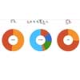

Visualizations
From the available data we chose to create four visualizations depicting specific areas we found to be of interest. The first visualization is a bubble graph where the bubbles vary in size based on the school's population and the percentage of minority students is compared over time with the percentage of students who qualified for F&R (Free or Reduced-Price Lunch Program). The second visualization is a collection of "demographic snapshots" displaying the gender, ethnic, and F&R breakdowns of various school districts in 2012. The third visualization is a line graph over time depicting the percentage of students who qualify for F&R at a given school. The fourth visualization is similar to the first visualization; however, instead of dividing the data up by school, the data is split into categories based on the percentage of the student body who are minorities.
View the Visualizations or Download the Raw Data (JSON)
| Visualization | Description | View | Download |
|---|---|---|---|
| A bubble graph where the bubbles vary in size based on the school's population and the percentage of minority students is compared over time with the percentage of students who qualified for F&R (Free or Reduced-Price Lunch Program) | View | Download | |
|  | A collection of "demographic snapshots" displaying the gender, ethnic, and F&R breakdowns of various school districts in 2012. | View | Download |
 |
A line graph over time depicting the percentage of students who qualify for F&R at a given school. | View | Download |
 |
Instead of dividing the data up by school, the data for this visualization is split into categories based on the percentage of the student body who are minorities compared over time with the percentage of students who qualified for F&R | View | Download |